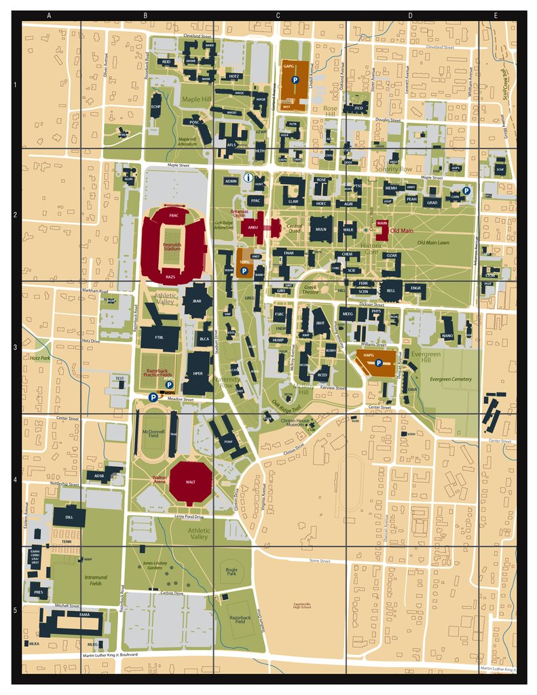

The city of Fayetteville was originally settled in 1828 under the name Washington Courthouse. It was renamed Fayetteville in 1829 and retains the name to this day. The city was officially incorporated in 1841, five years after Arkansas became a state in 1836. Ever since then, the town had kept growing.
The University of Arkansas was founded in 1871. There was a bidding war between three towns to provide the land and money to build the university. Fayetteville won in the end. The most notable building on the campus is Old Main. Finished in 1875, it was one of the main buildings where classes were originally taught and is sometimes called the "mother" of the campus. The campus has stedily grown since it's founding and now has a population of over 27,000 students as of Fall 2019. Its mascot, the Razorback, serves as a rally cry for the sports teams the University hosts including gymnastics, track and field, baseball, basketball and, since we are in the South, football.
If there's one street in Fayetteville you can just say by one name and everyone knows immediately where and what it is, it's Dickson Street. As you leave the west side of the University campus, you encounter a street that stretches down over a mile. Dickson Street was one of the original streets in Fayetteville, dating back to the 1840s. Many of the businesss on Dickson are housed in buildings from the 1800s. Many businesses have been on Dickson for decades and are institutions: George's Majestic Lounge, Collier's Drug Store and Dickson Street Bookshop to name a few. The addition of the Walton Arts Center helped to revitalize the street in the early 1990s and the street is center to many anual celebrations in Fayetteville.
The Fayetteville Farmer's Market has been serving the city year round for almost 50 years. Established in 1973, the market has a policy that all of the products offered must be locally made. During the winter month's, the market moves indoors into Ozark Natural Foods, a local co-op. From April through October, the market is located on the downtown Fayetteville sqaure. Market days on Tuesdays and Thursdays host many local farms that provide in-season produce and vegetables. Every Saturday, the market becomes a hub of activity. Saturday markets provide local produce, artwork, crafts, artisinal products, seasonal offerings and entertainment for the whole family. Just make sure to get their early before some of the most desirable products are gone. Learn more about the market and how to order online at their website.